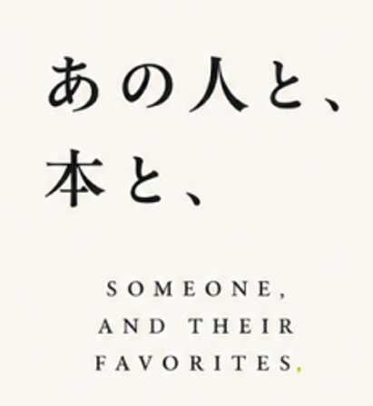

SC-02
企画作成
山田さん
同僚 / 10年の付き合い
退職
結婚
還暦
会社を一緒に支えてくれた、いつも丁寧で頼りになる人。

共同編集ギフトひとりを想う。みんなで選ぶ。ことばに編む。本人へ贈る。
設計内容と導線を確認するための叩き台です。最終デザインではありません。
残り 2 人に未投稿のご連絡を送る
山田さんは、静かに周囲を支え、誰かが困っているとすぐに手を差し伸べる人です。
一見落ち着いているが、実は思いやりが強く、信頼される存在です。
チームの中で、安心感を生む人。
所要時間は約3分。本が思いつかなくても、コメントだけで参加できます。
共有カードへの掲載は、本人が許可した内容だけに限定されます。
静かな情熱と、誰かの挑戦をそっと支える強さ。私たちは、そんなあなたに何度も助けられました。
6人の仲間が選んだ4冊と、あなたへ贈る言葉を一つの新聞にまとめました。
この贈りものを、大切な人にすすめたいですか？
言葉の持ち主と、入力を支援した人を分けて記録します。